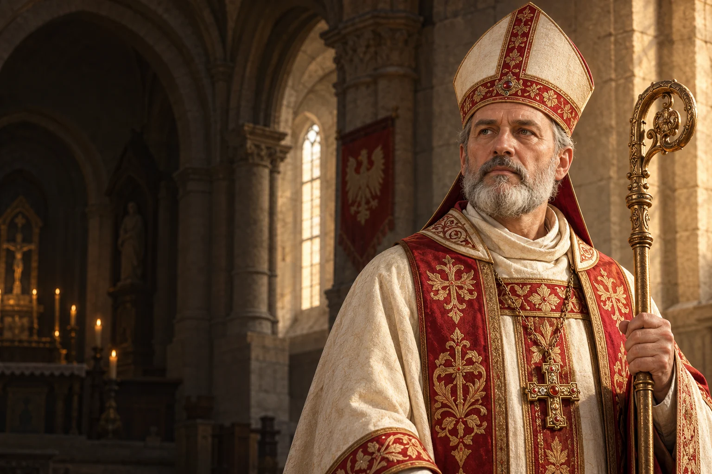

Odpowiedzialność
Zastanów się, jak uczciwie reagujesz, gdy ważna dla Ciebie zasada zostaje naruszona.

ok. 1030–1079
Obchód liturgiczny: 8 maja
Biskup krakowski i męczennik, patron Polski.
Biskup krakowski, który zginął w 1079 roku. Jego pamięć przez wieki kształtowała religijną i historyczną świadomość Polski.
Poznaj historię jego życia →Pamięć o trudnym konflikcie wymaga odwagi pytań i uważności na ograniczenia źródeł.
Refleksja redakcji W Modlitwie.Przybliżona data podawana przez tradycję.
Początek posługi biskupa krakowskiego.
Ginie w Krakowie w czasie konfliktu z królem.
Rozwój kultu przy grobie w katedrze.
Innocenty IV kanonizuje Stanisława w Asyżu.
Uroczyste ogłoszenie kanonizacji w Polsce.
 Współczesne wyobrażenie artystyczne.
Współczesne wyobrażenie artystyczne.Około 3 min czytania · 5 rozdziałów
Stanisław żył w XI wieku, w czasach pierwszych Piastów. Tradycja wskazuje Szczepanów jako miejsce jego urodzenia i podaje około 1030 roku jako przybliżoną datę. Źródła z tej epoki są nieliczne, dlatego w opowieści o jego młodości trzeba odróżniać późniejszą tradycję od informacji, które można ustalić z większą pewnością.
Późniejsze opowieści uzupełniają luki dotyczące jego pochodzenia i młodości. Niektóre zawierają szczegóły, których nie można niezależnie sprawdzić. Dlatego określenie miejsca i daty urodzenia jako tradycyjnych jest uczciwsze niż przedstawianie ich jako niewątpliwie potwierdzonych.
Jego liturgiczna pamięć w Polsce jest związana z majem i uroczystością ogłoszenia kanonizacji. Data 11 kwietnia występuje w ogólnym kalendarzu rzymskim. Ze względu na rozbieżności przekazów w tej biografii rok śmierci jest pewniejszy niż próba wskazania jej dokładnego dnia.
Stanisław był biskupem Krakowa w latach 1072–1079. Kościelna tradycja przedstawia go jako pasterza troszczącego się o wiernych i ubogich. Jego posługa przypadła na okres rządów Bolesława Śmiałego. W średniowiecznym państwie relacje między władzą świecką a biskupami miały znaczenie zarówno dla Kościoła, jak i dla polityki.
Biskupstwo krakowskie funkcjonowało w ścisłym związku z państwem wczesnopiastowskim. Biskup odpowiadał za życie religijne diecezji, duchowieństwo i sprawowanie liturgii. Przekazy podkreślają również jego troskę o ludzi ubogich i o kształt życia wspólnoty.
W 1079 roku doszło do konfliktu między biskupem a królem. Jego przyczyny i przebieg nie są w pełni jasne i pozostają przedmiotem badań. Stanisław poniósł śmierć w Krakowie. Późniejsza tradycja łączy to wydarzenie z kościołem na Skałce oraz działaniem króla. Nie należy przedstawiać szczegółowych motywów stron jako bezspornie ustalonych faktów.
Najstarsze informacje są zwięzłe, a późniejsi autorzy próbowali je rozwijać i interpretować. W źródłach pojawiają się różne wyjaśnienia konfliktu. Bezsporne pozostaje, że śmierć biskupa związała jego pamięć z Krakowem i z trudną historią ówczesnej władzy.
Pamięć o biskupie rozwijała się wokół jego grobu w katedrze na Wawelu. W 1253 roku papież Innocenty IV kanonizował Stanisława w Asyżu. W następnym roku kanonizację uroczyście ogłoszono w Krakowie. Kult męczennika odgrywał ważną rolę w życiu religijnym kraju, także w okresie rozbicia dzielnicowego.
Kanonizacja w Asyżu nastąpiła wiele pokoleń po śmierci Stanisława. Uroczystość krakowska w 1254 roku nadała wydarzeniu wyraźny wymiar lokalny i ogólnopolski. W kolejnych stuleciach grób biskupa był miejscem modlitwy wiernych oraz polskich władców.
Stanisław jest jednym z głównych patronów Polski. W Polsce jego uroczystość obchodzona jest 8 maja; ogólny kalendarz rzymski wskazuje 11 kwietnia. W Krakowie trwa tradycja procesji z relikwiami między Wawelem a Skałką. Dla współczesnego czytelnika jego historia jest również przypomnieniem, że średniowieczne świadectwa wymagają ostrożnego odczytania.
Wawel i Skałka pozostają dwoma ważnymi miejscami związanymi z jego kultem. Procesja po uroczystości patronalnej przypomina o żywej tradycji Krakowa. Można ją poznawać razem z historią, nie rozstrzygając ponad stan wiedzy dawnych sporów.
W Polsce należy do grona głównych patronów razem ze św. Wojciechem i Najświętszą Maryją Panną Królową Polski.
Zastanów się, jak uczciwie reagujesz, gdy ważna dla Ciebie zasada zostaje naruszona.

Przeczytaj o dawnym sporze z więcej niż jednej perspektywy, zanim wydasz ocenę.

Odwiedź miejsce lokalnej pamięci i dowiedz się, jak zmieniała się jego historia.
Ojcze nasz, któryś jest w niebie, święć się imię Twoje; przyjdź królestwo Twoje; bądź wola Twoja jako w niebie, tak i na ziemi. Chleba naszego powszedniego daj nam dzisiaj; i odpuść nam nasze winy, jako i my odpuszczamy naszym winowajcom; i nie wódź nas na pokuszenie, ale nas zbaw ode złego. Amen.
Tradycyjny tekst modlitwy; utrwalony polski wariant.Ojcze nasz →